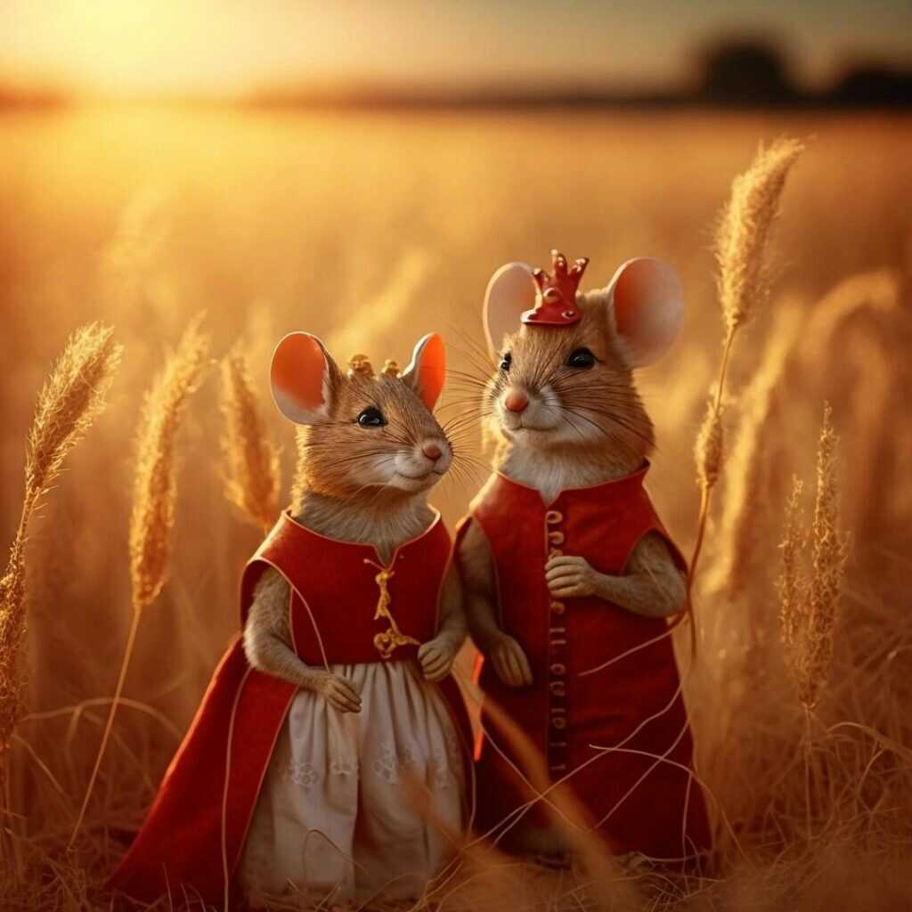

ANSWER OF ASSIGNMENT 2
IMAGE OF WILD ANIMALS love
ANSWER 1 :
ANSWER 2 : Click here to go to Google
ANSWER 3 :

ANSWER 4 :
KIGALI
Kigali is the capital city of Rwanda. It is the most populous city in Rwanda, with over 13 million population.
ANSWER 5 :
HELLO
HELLO
HELLO
HELLO
HELLO
HELLO
ANSWER 6 :This is a paragraph.
Here's a line break in the middle.
The road was long and winding, As I journeyed through the night. But I found solace in the darkness, And the stars shone bright. I walked alone, but not alone, For the earth was my companion. And the whisper of the wind, Brought peace to my heart again. Now I rest beneath the trees, And listen to the birdsong sweet. For the journey may be over, But the memories will always keep.ANSWER 8 :
This paragraph will be displayed in blue color: Peter and John are students who is realy freands ,they like to pray foot ball and volley ball in the break time all they praying on of football or volley ball.
ANSWER 9 :This paragraph will be displayed in Courier font: internet : is enterconected-network used to acess web page Also: inernet is popularly known as network of network * Firewoll: it is hardware / software that help to protect the system(p.c) connected on internet * A web session: is a series of diffrent action by a vistor on an individual website with in a a given amount of time
ANSWER 10 :This paragraph will be centered.
ANSWER 11 :This is a paragraph with a text size of 50 pixels.
ANSWER 12 :My background is yellow as you see
ANSWER 14 :
In contrast, web applications are created with the purpose of the content
and services being browsed by the user from any device via browsers
WWF's mission is to stop the degradation of our planet's natural environment.
ANSWER 16 :Tokyo is the capital of Japan, the most populous metropolitan area in the world.
ANSWER 17 :HTML is FUN to learn.
ANSWER 18 :My favorite color is blue red.
I am so cool
.
For 50 years, WWF has been protecting the future of nature. The world's leading conservationANSWER 21 :
the text below go right-to-left What a beautiful day
ANSWER 22 :The WHO was founded in 1948.
SECOND QUESTION